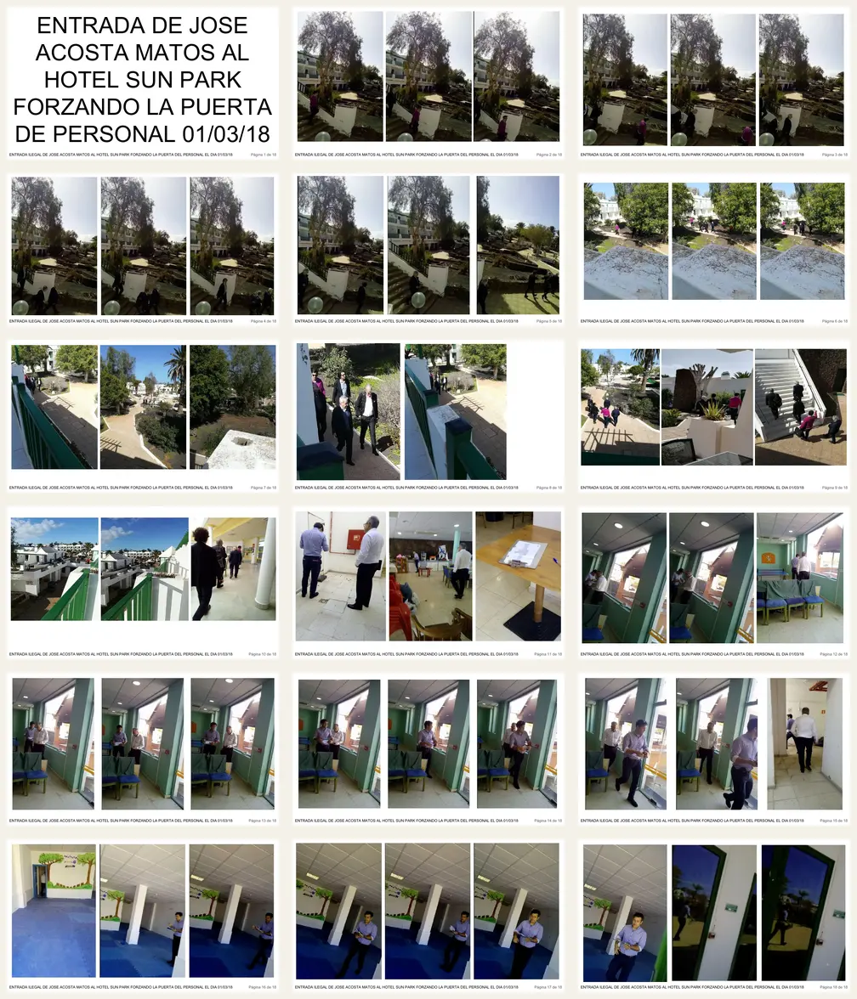
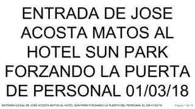

PD-SP-P-0145 · PD-SP-EVT-0001 · PRIMARY 2018 WITNESS RECORD
Joan Cruz / Sun Park — the contemporaneous evidence chain.
This page places the preserved 1 March 2018 photographic package, the 25 June 2018 sworn judicial witness account, the May 2018 identity-investigation trail, the verified 25 November 2019 HKI Hotels captures and the later Meeting Point / Acosta Matos continuity on one source-graded chronology.
Identity and legality firewall. The sworn act calls the person “JOAN”, gives no surname and says the witness did not know his role. Separate contemporaneous sources materially corroborate the Joan Cruz Nuez identity route. No facial recognition is used. The combined record does not itself establish access authority, illegality, an operator contract, fraud, conspiracy or criminal common purpose.
1. 1 March 2018 — controlled photographic package
Document: ENTRADA ILEGAL DE CAM Y JOAN CRUZ AL HOTEL SUN PARK - 01MAR2018.pdf
18 pages · 2,890,644 bytes · SHA-256 3c05f2a90648299ca7792296e386aca8b48fc11ef93676f519938aaa61ef306b.
The exact filename associates CAM and Joan Cruz; repeated captions name José Acosta Matos. “Illegal” is preserved as the source author's characterization, not as a judicial finding.
{kind=link}

{kind=link}

2. 25 June 2018 — sworn judicial witness corroboration
Primary judicial record. In DP 1132/2018 before Juzgado de Instrucción nº 2 (antiguo Mixto nº 7), Arrecife, Miguel Ángel Barreiro Cano promised to tell the truth. He placed a person he called “JOAN” at Sun Park in February or March 2018 together with a person called DANIEL.
Measurements with a plan
The witness described DANIEL and JOAN taking measurements of the buffet dining room, night bar and entrances using a plan.
Showing the hotel
He described another occasion when “DANIEL Y JOAN” arrived with three other men and showed them the hotel.
Repeated visits
He said DANIEL and JOAN returned two further times for the same purpose.
Refurbishment check
He associated a later two-person visit with checking installations for a refurbishment they were going to undertake.
Photo-folio mapping in the same statement: folios 25–33 — one visit involving three men; 34–41 — people arriving to measure; 49–56 — a two-person visit checking installations for refurbishment; 107–120 — the distinct 7 June event.
Limiting evidence travels with the corroboration. The witness said he did not know JOAN's position; described the pre-7-June activity in common/public areas; said no damage was caused during the visit with the three men; and separately said he had not seen José Daniel Acosta Matos force a door cylinder before 7 June and that José Daniel was not present at the 7 June event.
3. May 2018 — contemporaneous identity-investigation bridge
Classification: the sworn “JOAN” testimony + May Joan Cruz Nuez identification trail + 1 March source filename form a corroborated identity/continuity route. Final identity/capacity still requires non-biometric authentication through native messages, witness confirmation, calendars/travel, contracts/mandates and original image provenance.
4. 25 November 2019 — HKI Hotels publicly displayed Sun Park and Joan Cruz
The recovered original website captures are now published here. They establish the website state visible on 25 November 2019; they do not establish the first publication date, a 2018 mandate, contract, ownership, authority, payment or the capacity in which Cruz participated in any earlier visit.


5. Why the longer continuity matters
Primary BORME records place Joan Cruz Nuez among joint attorneys of Meeting Point Hotelmanagement (Canaries) and Meeting Point Investment before 2018, with 2019 revocations. Contemporaneous hospitality reporting places him as LABRANDA Hotels & Resorts director general at Hotel LABRANDA Marieta in 2016, while Acosta Matos identifies Grupo Patrimonial Acosta Matos as owner of that hotel project. Acosta Matos separately publishes its work on Meeting Point's Gran Canaria offices. Later, the Sun Park → Lava Verde → Club Sei Lanzarote sequence and the post-FTI BLUESEA/Meeting Point continuity create a legitimate documentary question about prior commercial familiarity, evaluation and project preparation.
Investigative inference only: the chronology justifies testing whether the February/March visits related to evaluation, measurements, project preparation, management discussions or future commercialization. It does not establish a pre-existing Club Sei contract or criminal coordination.
6. Follow the evidence in both directions
Meeting Point, LABRANDA, HKI and BLUESEA chronology.1 March event/evidence →
Canonical photographic-source controls.8 May investigation →
Contemporaneous Meeting Point/LABRANDA inquiry.7 June event →
Separate material-control chronology.Lava Verde / Club Sei →
Same-hotel commercial/project sequence.FTI → BLUESEA →
Later custody/control continuity.